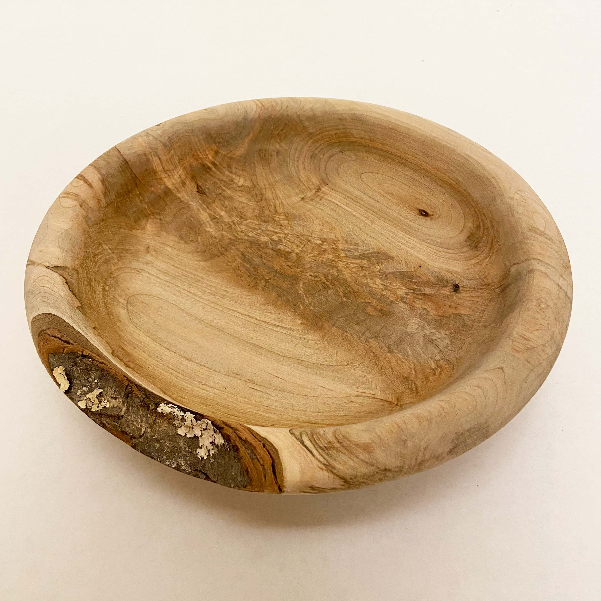
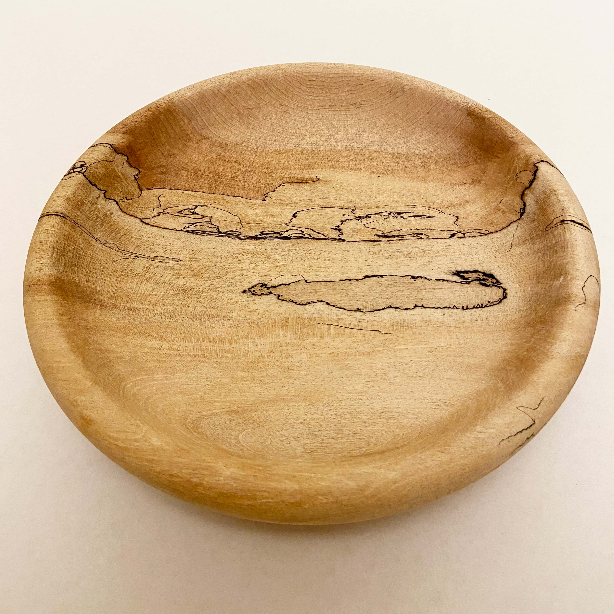
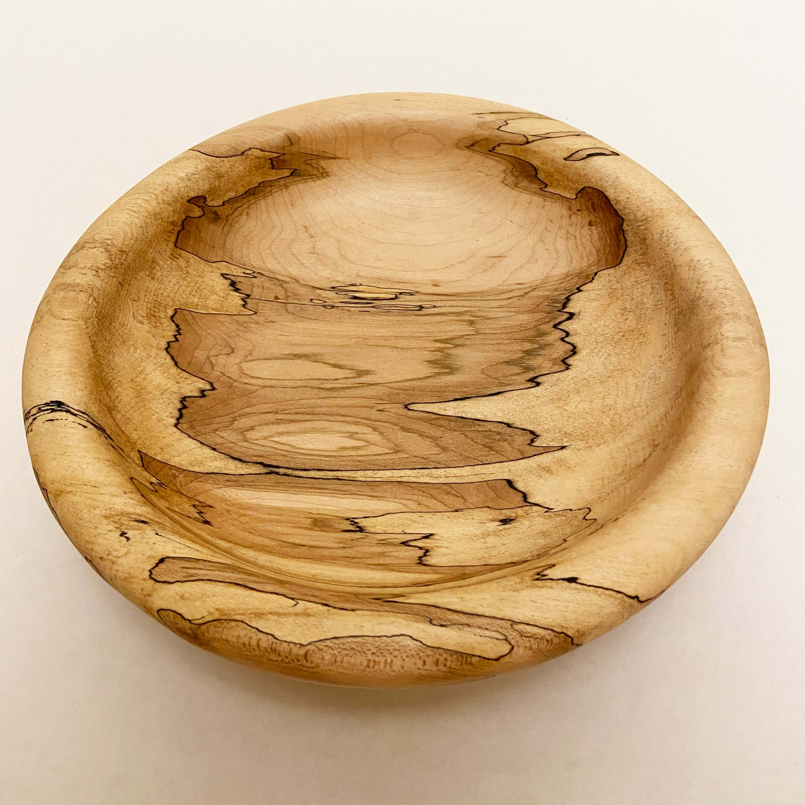

Other projects
Writing
Here's an article from Branch Magazine, Leading with Slow Craft
Wall panels
I'm not sure how to categorize these works. Here are a few series that aren't sculptures or paintings, maybe they are a little of each.

Algorithmic Botany
I took a class at the School for Poetic Computation. That is where I made the pattern that appears on the home page of this site. Here are a few other things from that class.
Bowls
When the perfect piece of wood shows up, this is what I like to do with it.


